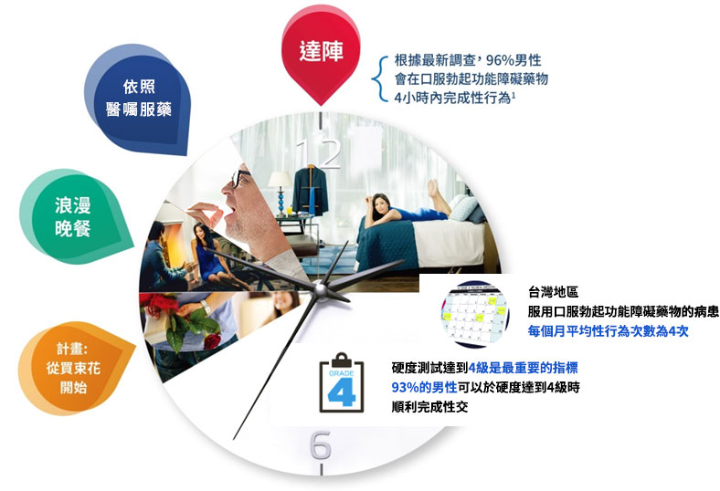

@@include('../layouts/front.html', { 
    "meta": { 
        "title": "性福大調查 | 性福在此一舉", 
        "description": "提前規劃 享受更幸福的夜晚", 
        "image": "img/1200x630.jpg" 
    } 
})
<section class="statistics" role="main">
    <figure class="background hidden-xs" data-src="../img/bg.jpg"></figure>
    <figure class="background visible-xs" data-src="../img/bg_mobile.jpg"></figure>
    <h2 class="vertical-middle">性福大調查</h2>

    <section class="content">
        <aside class="c">
            <article>
                <h3>提前規劃 享受更幸福的夜晚</h3>
                <hr>
                <p>根據最新調查報告指出，超過8成服用勃起功能障礙藥物的男性，會提前規劃性行為</p>
                <figure>
                    </figure>
            </article>
            <nav class="share">
                <a class="facebook" data-ga="share-survey-fb" href="javascript:app.utility.share.facebook('http://www.behard.com.tw/statistics/','性福大調查 | 性福在此一舉')">
                    <figure data-src="@@webRoot/img/icon-facebook.png"></figure>
                </a><a class="line" data-ga="share-survey-line" href="javascript:app.utility.share.line('http://www.behard.com.tw/statistics/','性福大調查 | 性福在此一舉')">
                    <figure data-src="@@webRoot/img/icon-line.png"></figure>
                </a>
            </nav>
        </aside>
    </section>

</section>
@@include('../layouts/butt.html', { "nav": { "statistics": "active" } })